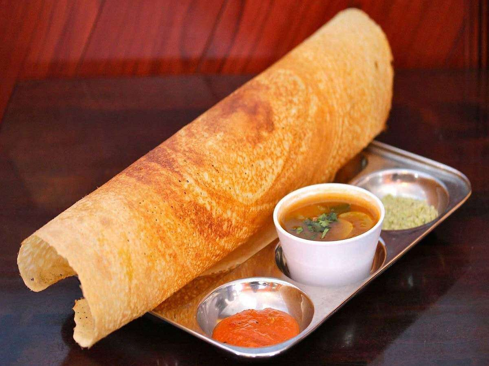

Daal Baati

A vegetarian indian meal made of wheat
This recipie is popular in southern india, it is crispy,
crunchy, filled with potatoes, there are many variations of this
unique and wonderful recipie, people all over india love it.
Its preparation is not very complex, anyone can make this wonderful
dish at home, the only thing you will struggle to find it is
indian spices.
Ingredients
- rice
- urad dal
- turmeric
- potato
- chilli
-
- salt
- indian spices
- soak rice and urad dal for 6-8 hours
- gring the rice and urad dal in 3:1 ratio
- add salt to the mix
- add water until it reaches thick-milk consistency
- heat a pan, put some ghee
- spread the batter in a circle shape, let it cook
- cook until slight brown